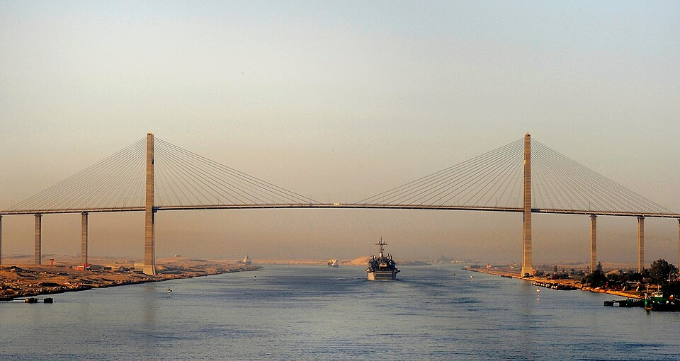

Queda abierto el canal de Suez: las naves pasan ya del Mediterráneo al mar Rojo
Encabezada por el yate imperial de la emperatriz Eugenia, una procesión de más de cuarenta buques empavesados entró esta mañana al canal que corta el istmo en ciento sesenta y cuatro kilómetros. El camino de la India se acorta en semanas: África entera acaba de quedar a un costado del mapa.

Al cañonazo de las ocho, bajo un cielo limpio y entre salvas de todas las escuadras ancladas en la rada, el yate imperial Águila, con la emperatriz Eugenia de Francia en el puente, enfiló esta mañana la boca del canal y abrió la marcha de una procesión de más de cuarenta naves de guerra y de gala: austríacas, prusianas, rusas, inglesas, francesas. A bordo del Águila va también el hombre de la jornada, el señor Fernando de Lesseps, que hace quince años no tenía de esta obra más que la idea. La columna navega despacio entre orillas de arena, rumbo al lago Timsah, donde la ciudad nueva de Ismailía prepara fiestas de mil y una noches.
El canal corta el istmo de Suez en una línea de ciento sesenta y cuatro kilómetros, aprovechando los lagos salados del centro, sin una sola esclusa: agua de mar de punta a punta. Diez años costó abrirlo, desde el primer golpe de azada en 1859. Los primeros años lo cavaron a mano decenas de millares de fellahs egipcios, levados por tandas; abolida luego esa leva forzosa, la compañía hubo de inventar su propio ejército de dragas y excavadoras de vapor, el mayor que se haya visto junto. La obra devoró millones de francos, padeció el cólera, y más de una vez los gabinetes de Europa la dieron por imposible.
La idea es vieja como los faraones, que abrieron y perdieron un canal entre el Nilo y el mar Rojo; los ingenieros de Bonaparte la revivieron hace setenta años, pero un error de nivelación les hizo creer que un mar estaba varios metros más alto que el otro, y que el canal era locura. Lesseps no es ingeniero sino diplomático: su fuerza fue la amistad del virrey de Egipto, que le firmó la concesión, y una porfía a prueba de burlas. Inglaterra, que domina la ruta del Cabo, miró la empresa con una frialdad apenas cortés; el dinero salió en buena parte del pequeño ahorrista francés, que compró acciones cuando los príncipes del dinero se abstenían.
Las fiestas del jedive Ismail han juntado en el desierto a un emperador, el de Austria, a príncipes de Prusia y de Holanda, a millares de invitados de Europa y a tribus enteras llegadas en camello a mirar los barcos andar por la arena. No todo fue serenidad: cuentan que anteanoche una nave egipcia varó atravesada en pleno canal, y que hubo horas de angustia —y hasta quien propuso volarla con pólvora— antes de que se la sacara a tiempo del paso. Anoche Puerto Said ardió en fuegos de artificio, y esta mañana la obra fue bendecida en ceremonias de dos religiones, que este canal se quiere de todos.
Cumplido el tránsito, el viaje de Europa a la India se acortará en semanas y en miles de millas, y el Mediterráneo, arrinconado desde que los portugueses doblaron el Cabo, vuelve a ser camino del mundo. Aquel atajo hacia las Indias que Colón salió a buscar por el poniente —de cuya jornada dio cuenta este diario hace ya casi cuatro siglos— lo acaba de abrir una pala en el desierto de Egipto. Quede para los años venideros decir a quién sirve finalmente esta puerta: las naciones que hoy desfilan empavesadas saben, aunque no lo digan en los brindis, que quien guarde la llave de este paso tendrá en la mano el comercio de dos mundos.